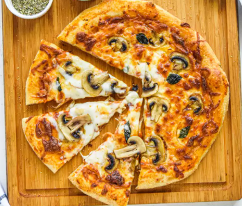

Home
Burrito Recipe

A pizza is an Italian dish of a flattened, baked dough base topped with ingredients like tomato sauce, cheese, and various other toppings such as meat or vegetables. It is traditionally baked at a high temperature, often in a wood-fired oven, and can be customized with different crust types, sauces, and a wide variety of toppings
Ingredients
- 2 ½ cups of all-purpose flour
- 1 teaspoon of salt
- 1 teaspoon of sugar
- 1 packet (7 g) of active dry yeast
- ¾ cup of warm water
- 2 tablespoons of olive oil
- ½ cup of tomato sauce or pizza sauce
- 1 ½ cups of shredded mozzarella cheese
- 1 tomato, sliced (optional)
- Fresh basil leaves (optional)
- Toppings of choice (pepperoni, mushrooms, peppers, onions, etc.)
Instructions
- In a small bowl, combine warm water, sugar, and yeast. Let it sit for about 5–10 minutes until foamy.
- In a large bowl, mix the flour and salt. Add the yeast mixture and olive oil.
- Stir until a dough forms, then knead on a floured surface for about 5 minutes until smooth.
- Place the dough in a lightly oiled bowl, cover, and let it rise for 1 hour or until doubled in size.
- Preheat the oven to 220°C (425°F).
- Roll out the dough into a circle and place it on a greased baking tray or pizza stone.
- Spread the tomato sauce evenly over the base.
- Sprinkle with mozzarella cheese and add your favorite toppings.
- Bake for 12–15 minutes, or until the crust is golden and the cheese is bubbling.
- Remove from the oven, top with fresh basil (if using), slice, and serve hot.